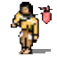
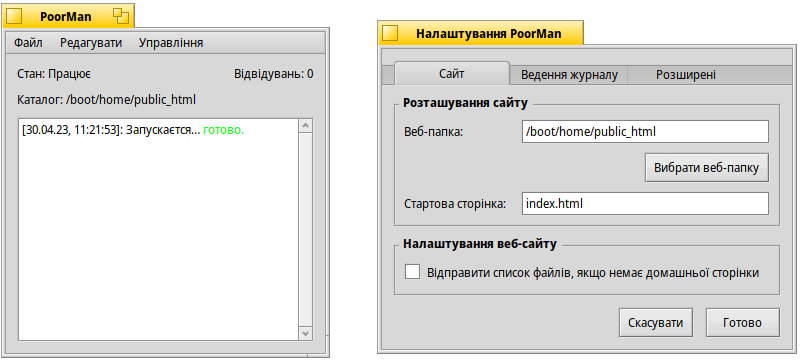

 PoorMan (Веб-сервер)
| Deskbar: | ||
| Розташування: | /boot/system/apps/PoorMan | |
| Налаштування: | ~/config/settings/PoorMan Settings |
PoorMan – це гарний маленький веб-сервер, який надзвичайно легко налаштувати. Звичайно, він не пропонує ніяких розширених можливостей, як інші потужні серверні програми, адже це всього лише веб-сервер для «бідних родичів».
Під час першого запуску PoorMan запитує папку, до якої буде надано доступ з мережі Інтернет. Якщо Ви виберете значення за замовчуванням , буде створено нову папку /boot/home/public_html. У цій папці має знаходитись файл HTML з типовою назвою index.html, який буде використано в якості стартової сторінки Вашого інтернет-ресурсу.
PoorMan представляє собою просту консоль, яка веде журнал його активності. Крім того, на панелі відображається інформація про стан сервера, веб-папку ресурсу та кількість відвідувань. Налаштування можна змінити за допомогою пункту меню :

Панель налаштувань розділена на три вкладки:
На вкладці Ви можете вибрати іншу папку розташування сайту, задати стартову сторінку та обрати опцію відправки списку файлів з веб-папки сайту при відсутності стартової сторінки.
Вкладка дозволяє ввімкнути/вимкнути виведення журналу у вікно консолі або, при необхідності, зберегти в окремому лог-файлі.
Вкладка містить настройки максимальної кількості одночасних з'єднань.
Пункти меню вікна консолі не потребують пояснень. За допомогою них Ви можете, наприклад, зберегти (частково) вивод консолі, очистити консоль або файл журналу а також запустити/зупинити сервер або обнулити лічильник відвідувань.